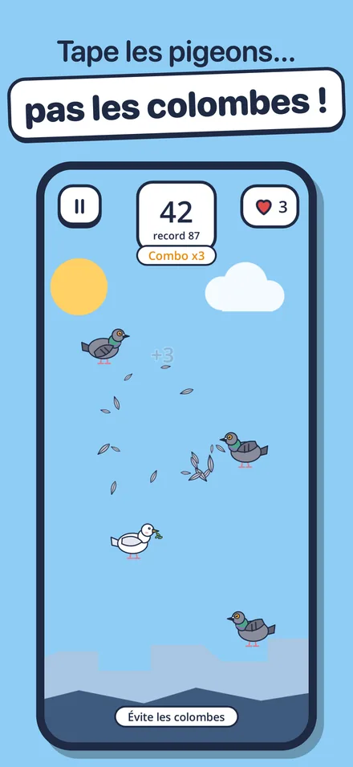
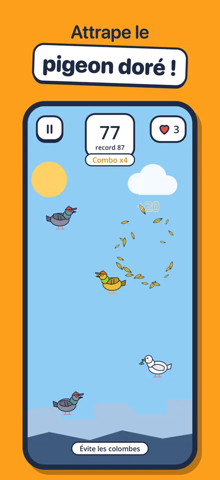
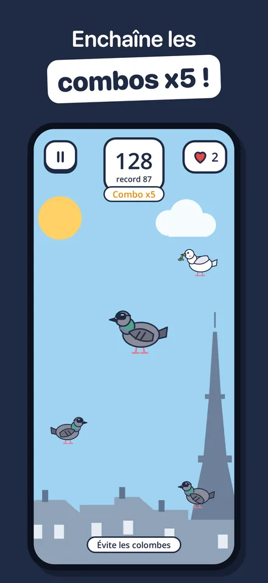
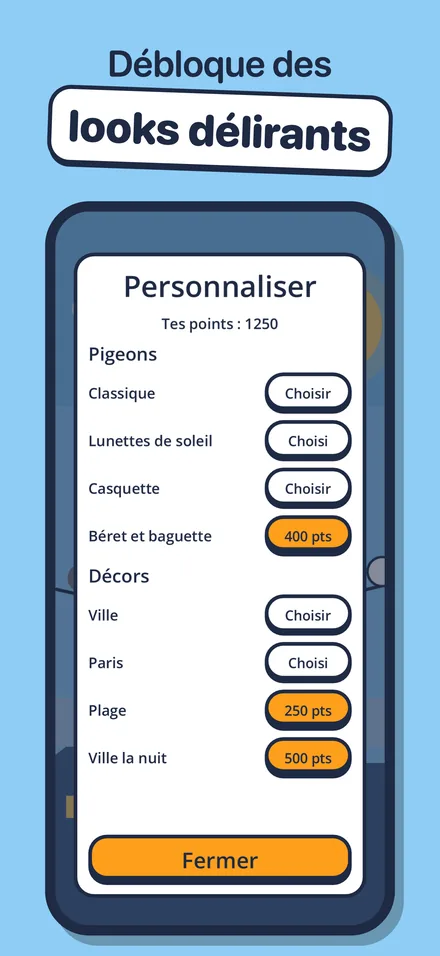
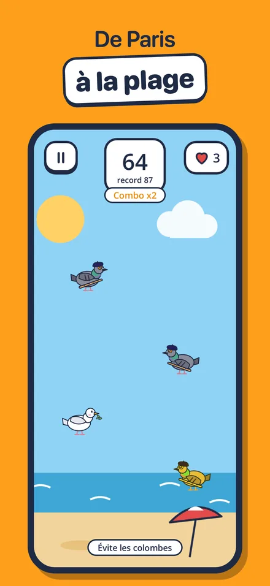
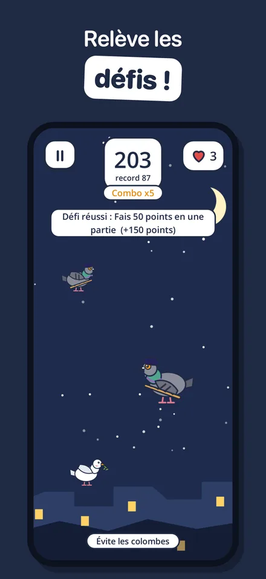
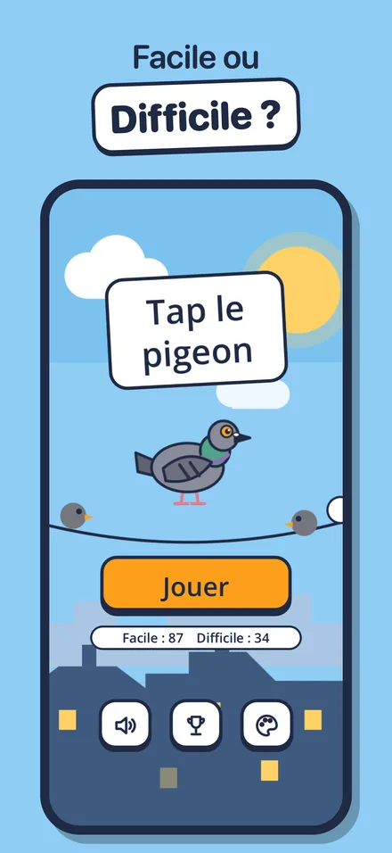

Un jeu d'arcade rapide et drôle
Des pigeons traversent l'écran : tape-les avant qu'ils ne s'échappent par le bord. Mais attention, si tu touches une colombe, la partie s'arrête net. Des parties de quelques minutes, jouables d'une seule main, parfaites pour une pause.
Le jeu en images







La règle en deux images


Ce qui t'attend
- Combos jusqu'à x5 en enchaînant les pigeons sans traîner
- Le pigeon doré, rare et rapide, qui rapporte 5 points
- Le gros pigeon, qu'il faut toucher 3 fois
- Des pigeons qui zigzaguent ou s'arrêtent net
- Deux niveaux, Facile (3 vies) et Difficile (1 vie), avec un record pour chacun
- 6 défis et des looks à débloquer : lunettes, casquette, béret et baguette
- 4 décors : la ville, Paris, la plage et la ville la nuit
Questions fréquentes
Comment marche le combo ?
Touche les pigeons à moins d'une seconde d'écart : au 3e d'affilée tu passes en x2, au 6e en x3, jusqu'à x5. Si tu attends trop ou qu'un pigeon s'échappe, le combo retombe.
Comment débloquer les looks et les décors ?
Chaque partie ajoute ton score à ta cagnotte de points, et les défis réussis en rapportent en bonus. Dépense-les depuis le bouton palette du menu.
Ma progression a disparu
Les records, les points et les objets débloqués sont enregistrés uniquement dans ton téléphone. Ils sont effacés si tu supprimes le jeu et ne passent pas d'un téléphone à l'autre.
Le jeu n'a pas de son
Vérifie le bouton son en bas du menu, puis que ton téléphone n'est pas en mode silencieux.
Publicités et vie privée
Il n'y a jamais de publicité pendant une partie : seulement une publicité de temps en temps entre deux parties, et une vidéo facultative pour continuer après une défaite. En Europe, ton consentement est demandé au premier lancement ; sur iPhone, le suivi publicitaire se règle aussi dans Réglages > Confidentialité et sécurité > Suivi. Détails dans la politique de confidentialité.
Nous contacter
Un bug, une question, une idée de pigeon ?
Écris à labasquelucas@gmail.com
Indique ton modèle de téléphone : on répond sous quelques jours.